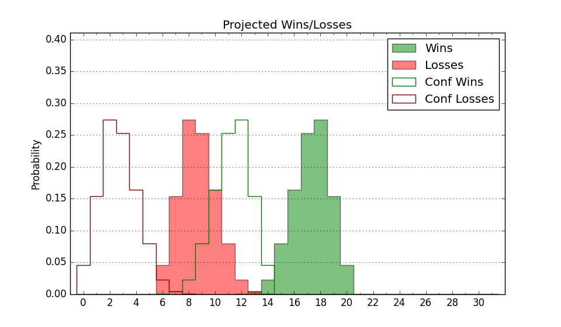

| Home | Game Probabilities | Conferences | Preseason Predictions | Odds Charts | NCAA Tournament |
| City: | New Haven, Connecticut | |
| Conference: | Ivy League (1st)
| |
| Record: | 2-0 (Conf) 8-6 (Overall) | |
| Ratings: | Comp.: 9.7 (88th) Net: 10.4 (88th) Off: 114.1 (57th) Def: 103.7 (136th) SoR: 0.0 (143rd) |
| Remaining | ||||||
|---|---|---|---|---|---|---|
| Date | Opponent | Win Prob | Pred. | |||
| 1/20 | Dartmouth (288) | 94.1% | W 86-66 | |||
| 1/25 | Harvard (247) | 91.1% | W 81-65 | |||
| 1/31 | @ Princeton (124) | 49.3% | L 76-77 | |||
| 2/1 | @ Penn (320) | 86.8% | W 80-67 | |||
| 2/8 | @ Cornell (123) | 49.2% | L 82-83 | |||
| 2/14 | Penn (320) | 95.7% | W 84-63 | |||
| 2/15 | Princeton (124) | 76.8% | W 81-72 | |||
| 2/21 | Cornell (123) | 76.8% | W 87-78 | |||
| 2/22 | Columbia (199) | 87.2% | W 86-73 | |||
| 2/28 | @ Dartmouth (288) | 82.4% | W 82-71 | |||
| 3/1 | @ Harvard (247) | 75.0% | W 77-69 | |||
| 3/8 | @ Brown (215) | 69.2% | W 75-70 | |||
| Previous | Game Score | |||||
| Date | Opponent | Win Prob | Result | Off | Def | Net |
| 11/4 | Quinnipiac (185) | 85.5% | W 88-62 | 5.0 | 12.3 | 17.3 |
| 11/8 | @Illinois Chicago (121) | 49.0% | L 79-91 | -7.8 | -5.5 | -13.3 |
| 11/11 | @Purdue (11) | 7.7% | L 84-92 | 16.5 | -4.7 | 11.8 |
| 11/16 | @Minnesota (114) | 46.9% | L 56-59 | -3.4 | 3.3 | -0.1 |
| 11/20 | @Stony Brook (346) | 91.0% | W 86-64 | -1.2 | 10.0 | 8.8 |
| 11/23 | (N) Fairfield (341) | 94.4% | W 91-66 | 17.9 | -11.6 | 6.3 |
| 11/24 | (N) Delaware (208) | 79.2% | L 94-100 | -3.2 | -29.7 | -33.0 |
| 12/2 | @Rhode Island (103) | 43.0% | L 78-84 | -5.8 | -5.4 | -11.2 |
| 12/7 | Vermont (227) | 89.5% | W 65-50 | -7.6 | 11.8 | 4.2 |
| 12/20 | (N) Akron (150) | 69.3% | W 74-58 | -8.4 | 25.5 | 17.1 |
| 12/21 | (N) UTEP (144) | 68.2% | L 74-75 | -4.4 | -5.1 | -9.5 |
| 1/1 | Howard (290) | 94.2% | W 93-65 | 13.8 | 2.1 | 15.9 |
| 1/11 | Brown (215) | 88.5% | W 79-58 | 4.5 | 6.1 | 10.6 |
| 1/18 | @Columbia (199) | 66.7% | W 92-88 | 4.4 | -6.8 | -2.4 |
| Stats & Trends | |||||
|---|---|---|---|---|---|
| Current | Day | Week | Month | Season | |
| Composite | 9.7 | +0.0 | +0.2 | +3.8 | +3.9 |
| Comp Rank | 88 | -- | -3 | +20 | +16 |
| Net Efficiency | 10.4 | +0.0 | +0.1 | +4.5 | -- |
| Net Rank | 88 | -- | -4 | +21 | -- |
| Off Efficiency | 114.1 | +0.0 | +0.1 | +0.5 | -- |
| Off Rank | 57 | -- | -- | +5 | -- |
| Def Efficiency | 103.7 | -0.0 | +0.0 | +4.0 | -- |
| Def Rank | 136 | +1 | +4 | +81 | -- |
| SoS Rank | 215 | -1 | +23 | -34 | -- |
| Exp. Wins | 17.3 | -0.0 | +0.4 | +1.7 | +1.5 |
| Exp. Conf Wins | 11.3 | -0.0 | +0.4 | +1.8 | +2.6 |
| Conf Champ Prob | 69.0 | +0.2 | +4.8 | +30.8 | +43.1 |

| Advanced Stats | ||
|---|---|---|
| Stat | Value | Rank |
| Off Eff FG % | 0.531 | 106 |
| Off Ast Ratio | 0.164 | 80 |
| Off ORB% | 0.327 | 79 |
| Off TO Rate | 0.138 | 102 |
| Off FT Ratio | 0.357 | 123 |
| Def Eff FG % | 0.493 | 121 |
| Def Ast Ratio | 0.140 | 130 |
| Def ORB% | 0.230 | 12 |
| Def TO Rate | 0.140 | 242 |
| Def FT Ratio | 0.380 | 281 |